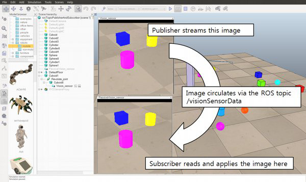
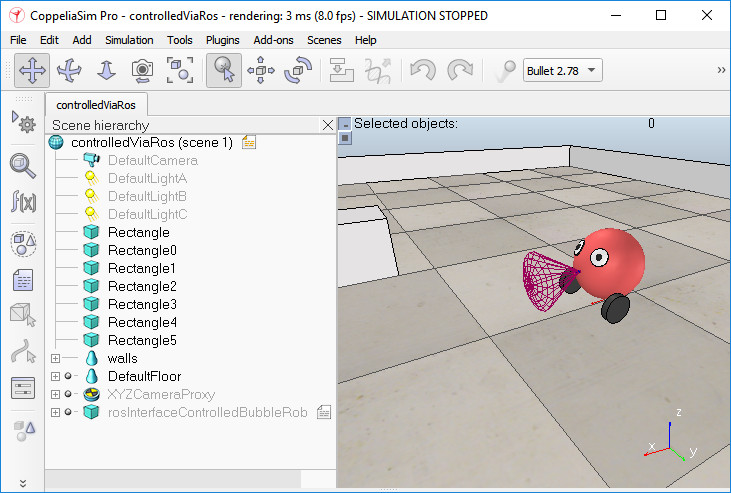

|

ROS 2 tutorial
This tutorial will try to explain in a simple way how you can manage to have CoppeliaSim ROS 2 enabled, based on ROS 2 Foxy.
First of all you should make sure that you have gone through the official ROS 2 tutorials, at least the beginner section. Then, we assume that you have the latest Ubuntu running, that ROS is installed, and that the workspace folders are set. Here also refer to the official documentation regarding the ROS 2 installation.
The general ROS 2 functionality in CoppeliaSim is supported via the ROS 2 Interface (libsimExtROS2.so). The Linux distribution should include that file already compiled in CoppeliaSim/compiledROSPlugins, but it first needs to be copied to CoppeliaSim/, otherwise it won't be loaded. You might however experience plugin load problems, depending on your system specificities: make sure to always inspect the terminal window of CoppeliaSim for details about plugin load operations. Plugins are loaded when CoppeliaSim is launched. Also make sure to source the ROS 2 environment prior to running CoppeliaSim.
If the plugin cannot be loaded, then you should recompile it by yourself. It is open source and can be modified as much as needed in order to support a specific feature or to extend its functionality. If specific messages/services/etc. need to be supported, make sure to edit files located in simExtROS2/meta/, prior to recompilation. There are 2 packages:
simExtROS2: this package is the ROS 2 Interface that will be compiled to a ".so" file, and that is used by CoppeliaSim.
ros2_bubble_rob: this is the package of a very simple robot controller that connects to CoppeliaSim via the ROS 2 Interface. This node will be in charge of controlling the red robot in the demo scene controlTypeExamples/controlledViaRos.ttt
Above packages should be copied to your ros2_ws/src folder.
In order to build the packages, navigate to the ros2_ws folder and type:
$ export COPPELIASIM_ROOT_DIR=~/path/to/coppeliaSim/folder
$ ulimit -s unlimited #otherwise compilation might freeze/crash
$ colcon build --symlink-install --cmake-args -DCMAKE_BUILD_TYPE=Release
That's it! The packages should have been generated and compiled to a library, which is automatically copied to the CoppeliaSim installation folder. The plugin is now ready to be used.
Now open a terminal, move to the CoppeliaSim installation folder and start CoppeliaSim. This is what you should have (or similar):
$ ./coppeliaSim.sh
...
Plugin 'ROS2Interface': loading...
Plugin 'ROS2Interface': load succeeded.
...
Upon succesful ROS 2 Interface load, checking the available nodes gives this:
$ ros2 node list
/sim_ros2_interface
In an empty CoppeliaSim scene, select an object, then attach a non-threaded child script to it with [Menu bar --> Add --> Associated child script --> Non threaded]. Open the script editor for that script and replace the content with following:
function subscriber_callback(msg)
-- This is the subscriber callback function
sim.addLog(sim.verbosity_scriptinfos,'subscriber receiver following Float32: '..msg.data)
end
function getTransformStamped(objHandle,name,relTo,relToName)
-- This function retrieves the stamped transform for a specific object
t=simROS2.getSystemTime()
p=sim.getObjectPosition(objHandle,relTo)
o=sim.getObjectQuaternion(objHandle,relTo)
return {
header={
stamp=t,
frame_id=relToName
},
child_frame_id=name,
transform={
translation={x=p[1],y=p[2],z=p[3]},
rotation={x=o[1],y=o[2],z=o[3],w=o[4]}
}
}
end
function sysCall_init()
-- The child script initialization
objectHandle=sim.getObject('.')
objectAlias=sim.getObjectAlias(objectHandle,3)
-- Prepare the float32 publisher and subscriber (we subscribe to the topic we publish):
if simROS2 then
publisher=simROS2.createPublisher('/simulationTime','std_msgs/msg/Float32')
subscriber=simROS2.createSubscription('/simulationTime','std_msgs/msg/Float32','subscriber_callback')
end
end
function sysCall_actuation()
-- Send an updated simulation time message, and send the transform of the object attached to this script:
if simROS2 then
simROS2.publish(publisher,{data=sim.getSimulationTime()})
simROS2.sendTransform(getTransformStamped(objectHandle,objectAlias,-1,'world'))
-- To send several transforms at once, use simROS2.sendTransforms instead
end
end
function sysCall_cleanup()
-- Following not really needed in a simulation script (i.e. automatically shut down at simulation end):
if simROS2 then
simROS.shutdownPublisher(publisher)
simROS.shutdownSubscriber(subscriber)
end
end
Above script will publish the simulation time, and subscribe to it at the same time. It will also publish the transform of the object the script is attached to. You should be able to see the simulation time topic with:
$ ros2 topic list
To see the message content, you can type:
$ ros2 topic echo /simulationTime
Now load the demo scene ros2InterfaceTopicPublisherAndSubscriber.ttt, and run the simulation. The code in the child script attached to Vision_sensor will enable a publisher to stream the vision sensor's image, and also enable a subscriber to listen to that same stream. The subscriber applies the read data to the passive vision sensor, that is only used as a data container. So CoppeliaSim is streaming data, while listening to the same data! This is what is happening:

[Image publisher and image subscriber demo]
Try experimenting a little bit with the code. You can also visualize the image that CoppeliaSim streams with following command:
$ ros2 run image_tools showimage --ros-args --remap image:=/visionSensorData
Had you been streaming simpler data, then you could also have visualized it with:
$ ros2 topic echo /visionSensorData
Now stop the simulation and load the demo scene controlTypeExamples/controlledViaRos2.ttt, and run the simulation. The robot is simplistic, and also behaving in a simplistic way for simplification purposes. It is controlled via the ROS 2 Interface:

[External client application controlling the robot via ROS]
The child script attached to the robot, and running in a non-threaded fashion, is in charge of following:
determine some object handles (e.g. motor joint handles and proximity sensor handle)
verify if the ROS 2 Interface is loaded
Launch motor speed subscribers
Launch a sensor publisher and a simulation time publisher
and finally launch a client application. The application is called with some topic names as arguments, so that it will know which topics to listen to and to subscribe. The client application (ros2BubbleRob) is then taking over the control of the robot via ROS 2.
While simulation is running, copy and paste a few times the robot. Notice that every copy is directly operational and independent. This is one of the many strengths of CoppeliaSim.
Now stop the simulation and open a new scene, then drag following model into it: Models/tools/ros2Interface helper tool.ttm. This model is constituted by a single customization script that offers following topic publishers and subscribers:
startSimulation topic: can be used to start a simulation by publishing on this topic a std_msgs/msg/Bool message.
pauseSimulation topic: can be used to pause a simulation by publishing on this topic a std_msgs/msg/Bool message.
stopSimulation topic: can be used to stop a simulation by publishing on this topic a std_msgs/msg/Bool message.
enableSyncMode topic: by publishing a std_msgs/msg/Bool message on this topic, you can enable/disable the stepped mode.
triggerNextStep topic: by publishing a std_msgs/msg/Bool message on this topic, you can trigger the next simulation step, while in stepped mode.
simulationStepDone topic: a message of type std_msgs/msg/Bool will be published at the end of each simulation pass.
simulationState topic: messages of type std_msgs/msg/Int32 will be published on a regular basis. 0 indicates that the simulation is stopped, 1 that it is running and 2 that it is paused.
simulationTime topic: messages of type std_msgs/msg/Float32 will be published on a regular basis, indicating the current simulation time.
Have a look at the content of the customization script, that can be fully customized for various purposes. Try generating topic messages from the command line, for instance:
$ ros2 topic pub /startSimulation std_msgs/msg/Bool '{data: true}' --once
$ ros2 topic pub /pauseSimulation std_msgs/msg/Bool '{data: true}' --once
$ ros2 topic pub /stopSimulation std_msgs/msg/Bool '{data: true}' --once
$ ros2 topic pub /enableSyncMode std_msgs/msg/Bool '{data: true}' --once
$ ros2 topic pub /startSimulation std_msgs/msg/Bool '{data: true}' --once
$ ros2 topic pub /triggerNextStep std_msgs/msg/Bool '{data: true}' --once
$ ros2 topic pub /triggerNextStep std_msgs/msg/Bool '{data: true}' --once
$ ros2 topic pub /triggerNextStep std_msgs/msg/Bool '{data: true}' --once
$ ros2 topic pub /stopSimulation std_msgs/msg/Bool '{data: true}' --once
In order to display the current simulation time, you could type:
$ ros2 topic echo /simulationTime
Finally, make sure to have a look at the remote API functionality in CoppeliaSim: it allows for remote function execution, fast data streaming back and forth, is quite simple to use, leightweight and cross-platform. The remote API functionality is available for 7 different languages and can be an interesting alternative to ROS in some cases.
|